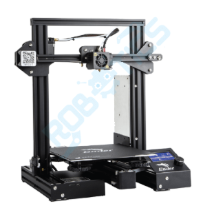

Filamento para impresión 3D.
Es un material termoplástico en forma de hilo continuo que se utiliza como insumo en impresoras 3D de tecnología FDM (modelado por deposición fundida). Al calentarse, el filamento se funde y se deposita capa por capa para crear objetos tridimensionales.

Impresora 3D.
Es un dispositivo que crea objetos tridimensionales a partir de un diseño digital, construyéndolos capa por capa mediante la deposición de material, generalmente plástico fundido, utilizando tecnologías como la fabricación por deposición fundida (FDM).

Servomotores.
Son motores eléctricos que permiten controlar con precisión el movimiento, la posición y la velocidad de un objeto. Están compuestos por un motor, un sistema de control y un sensor de retroalimentación. Se utilizan en robótica, automatización, impresoras 3D y otros dispositivos electrónicos que requieren movimientos exactos.
Placa de arduino nano.
Es una placa de desarrollo pequeña y compacta basada en el microcontrolador ATmega328. Diseñada para proyectos electrónicos, permite programar y controlar distintos dispositivos como sensores, luces o motores.

Cargador TP4056.
Es un módulo de carga para baterías de litio, especialmente diseñado para cargar celdas de 3.7V (como las 18650). Cuenta con un chip controlador que regula la corriente de carga, protección contra sobrecarga, sobredescarga y cortocircuitos.

Batería de 3.07 de una celda.
Es una batería recargable de ion de litio o polímero de litio (Li-ion o Li-Po) que proporciona un voltaje nominal de 3.7 voltios.

Interruptor.
Es un dispositivo eléctrico que permite abrir o cerrar un circuito, controlando el paso de la corriente. Se utiliza para encender o apagar aparatos eléctricos de forma manual o automática.
Cables hembra.
Son conductores eléctricos que en sus extremos tienen conectores tipo hembra, es decir, con orificios que permiten insertar pines o conectores macho. Se usan para establecer conexiones temporales o permanentes en proyectos electrónicos, especialmente en placas de desarrollo como Arduino o protoboards.

Módulo bluetooth.
Es un dispositivo electrónico que permite la comunicación inalámbrica entre equipos a corta distancia usando la tecnología Bluetooth. Se utiliza para enviar y recibir datos sin cables, conectando dispositivos como microcontroladores, smartphones, computadoras y sensores en proyectos de electrónica y automatización.